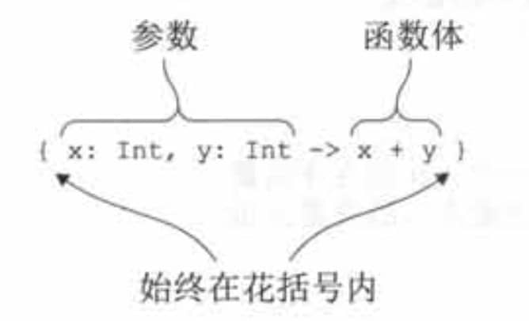

1. 介绍
Lambda表达式，或简称lambda，本质上就是可以传递给其他函数的一小段代码。
2. Lambda表达式和成员引用
2.1. Lambda 表达式的语法

Kotlin的lambda表达式始终用花括号包围。
可以把lambda表达式存储在一个变量中， 把这个变量当作普通函数对待(即通过相应实参调用它)：
fun main() {
val sum = { x: Int, y: Int -> x + y }
println(sum(1,2))
}
3
还可以直接调用lambda表达式
fun main() {
{ println("aa")}()
}
aa
精简表达式
people.maxBy{{ P: Person -> p.age })
可以精简为：
println(people.maxBy { it.age })
2.2. 在作用域中访问变量
和Java不一样，Kotlin允许在lambda内部访问非final 变量甚至修改它们。
fun chapter5Test1() {
var num = 1
val lambda = { num++ }
run(lambda)
println("num = $num")
}
num = 2
注意，默认情况下，局部变量的生命期被限制在声明这个变量的函数中。但是如果它被lambda捕捉了，使用这个变量的代码可以被存储并稍后再执行。
原理
当捕捉final变量时，它的值和使用这个值的lambda代码一起存储。而对非final变量来说，它的值被封装在一个特殊的包装器中，这样就可以改变这个值，而对这个包装器的引用会和lambda代码起存储。
这里有一个重要的注意事项，如果lambda被用作事件处理器或者用在其他异步执行的情况，对局部变量的修改只会在lambda执行的时候发生。
2.3. 成员引用
Kolin和Java8一样，如果把函数转换成一个值，就可以传递它。使用::运算符来转换：
val getAge = Person::age
这种表达式称为成员引用，它提供了简明语法，来创建一个调用单个方法或者访问单个属性的函数值。
注意，不管引用的是函数还是属性，都不要在成员引用的名称后面加括号。成员引用和调用该函数的lambda具有一样的类型， 所以可以互换使用：
people.maxBy (Person::age)
还可以引用顶层函数(不是类的成员)：
fun salute() = println("Salute")
fun main() {
run(::salute)
}
Salute
省略了类名称，直接以::开头。
3. 内联函数
在Kotlin中每声明一个Lambda表达式，就会在字节码中产生一个匿名类。该匿名类包含了一个invoke方法，作为Lambda的调用方法，每次调用的时候，还会创建一个新的对象。可想而知，Lambda语法虽然简洁，但是额外增加的开销也不少。
3.1. Java的处理方式
invokedynamic：Java在SE 7之后通过invokedynamic技术实现了在运行期才产生相应的翻译代码。在invokedynamic被首次调用的时候，就会触发产生一个匿名类来替换中间码invokedynamic，后续的调用会 直接采用这个匿名类的代码。这种做法的好处主要体现在：
- 由于具体的转换实现是在运行时产生的，在字节码中能看到的只有一个固定的invokedynamic，所以需要静态生成的类的个数及字节码大小都显著减少
- 与编译时写死在字节码中的策略不同，利用invokedynamic可以把实际的翻译策略隐藏在JDK库的实现，这极大提高了灵活性，在确保向后兼容性的同时，后期可以继续对翻译策略不断优化升级
- JVM天然支持了针对该方式的Lambda表达式的翻译和优化，这也意味着开发者在书写Lambda表达式的同时，可以完全不用关心这个问题，这极大地提升了开发的体验。
TODO zsy invokedynamic的demo
3.2. inline
内联函数：使用inline修饰符标记一个函数，在函数被使用的时候编译器并不会生成函数调用的代码，而是使用函数实现的真实代码替换每一次的函数调用。当一个函数被声明为inline时，它的函数体是内联的。换句话说， 函数体会被直接替换到函数被调用的地方，而不是被正常调用。
类似于C++的内联函数
以下情况应避免使用内联函数：
- 由于JVM对普通的函数已经能够根据实际情况智能地判断是否进行内联优化，所以并不需要对其使用Kotlin的inline语法，那只会让字节码变得更加复杂。
- 尽量避免对具有大量函数体的函数进行内联，这样会导致过多的字节码数量
- 一旦一个函数被定义为内联函数，便不能获取闭包类的私有成员，除非把它们声明为internal。
3.3. noinline：避免参数被内联
函数需要接收多个参数，但只想对其中部分Lambda参数内联，其他的则不内联，这个又该如何处理呢？
Kotlin在引入inline的同时，也新增了noinline关键字，可以把它加在不想要内联的参数开头，该参数便不会具有内联的效果。
4. 在lambda中返回
fun test3() {
// fun1 { return } // 编译错误
println("fun1")
fun1 { return@fun1 }
println("fun2")
fun2 { return }
}
private fun fun1(returning: () -> Unit) {
println("before local return")
returning()
println("after local return")
return
}
private inline fun fun2(returning: () -> Unit) {
println("before local return")
returning()
println("after local return")
return
}
fun1
before local return
after local return
fun2
before local return
正常情况下Lambda表达式不允许存在return关键字（见第2行代码）。
如果需要用return关键字，那么需要使用内联函数，但此时是局部返回（见第6行代码）。
如果需要非局部返回，则通过标签利用@符号返回（见第4行代码）。
4.1. crossinline：禁用局部返回
非局部返回虽然在某些场合下非常有用，但可能也存在危险。因为有时候，内联函数所接收的Lambda参数常常来自于上下文其他地方。为了避免带有return的Lambda参数产生破坏，还可以使用crossinline关键字来修饰该参数，从而杜绝此类问题的发生。
fun test4() {
// fun3 { return } // 编译错误
}
private inline fun fun3(crossinline returning: () -> Unit) {
returning()
}
5. 序列（惰性操作）
map和filter函数会创建临时对象，序列可以避免创建这些临时中间对象。
fun test2() {
val list = listOf(1, 2, 3, 4, 5, 6, 7, 8)
println(
list.asSequence()
.map { it * 2 }
.filter { it % 3 == 0 }
.toList()
)
}
[6, 12]
这个例子没有创建任何用于存储元素的中间集合，所以元素数量巨大的情况下性能将显著提升。
Kotlin惰性集合操作的入口就是Sequence接口。这个接口表示的就是个可以逐个列举元素的元素序列。Sequence只提供了一个方法，iterator，用来从序列中获取值。
Sequence接口的强大之处在于其操作的实现方式。序列中的元素求值是惰性的。因此，可以使用序列更高效地对集合元素执行链式操作，而不需要创建额外的集合来保存过程中产生的中间结果。
可以调用扩展函数asSequence把任意集合转换成序列，调用toList来做反向的转换。
为什么需要把序列转换回集合？用序列代替集合不是更方便吗？
如果只需要迭代序列中的元素，可以直接使用序列。如果要用其他的API，比如用下标访问元素，那么需要把序列转换成列表。
5.1. 执行序列操作
序列操作分为两类：中间操作和未端操作。一次中间操作返回的是另一个序列，这个新序列知道如何变换原始序列中的无素。而一次末端操作返回的是个结果， 这个结果可能是集合、元素、数字，或者其他从初始集合的变换序列中获取的任意对象。
中间操作始终都是情性的。
先看看下面这个缺少了末端操作的例子
fun main() {
listOf(1, 2, 3, 4)
.asSequence()
.map {
print("map($it) ")
it * it
}
.filter {
print("filter($it) ")
it % 2 == 0
}
}
执行这段代码并不会在控制台上输出任何内容。这意味着map和filter变换被延期了，它们只有在获取结果的时候才会被应用(即末端操作被调用的时候)
fun main() {
listOf(1, 2, 3, 4)
.asSequence()
.map {
print("map($it) ")
it * it
}
.filter {
print("filter($it) ")
it % 2 == 0
}
.toList()
}
map(1) filter(1) map(2) filter(4) map(3) filter(9) map(4) filter(16)
末端操作触发执行了所有的延期计算。
这个例子中另外一件值得注意的重要事情是计算执行的顺序。对序列来说，所有操作是按顺序应用在每一个元素上：处理完第一个元素(先映射再过滤)，然后完成第二个元素的处理，以此类推。
5.2. 创建（无限）序列
前面的例子都是使用同一个方法创建序列：在集合上调用asSequence()。另一种可能性是使用generateSequence函数。给定序列中的前一个元素，这个函数会计算出下一个元素。下面这个例子就是如何使用generateSequence计算100以内所有自然数之和。
fun main() {
val naturalNumbers = generateSequence(0) { it + 1 }
val numbersTo100 = naturalNumbers.takeWhile { it <= 100 }
println(numbersTo100.sum())//当获取结果“sum”时，所有被推迟的操作都被执行
}
5050
5.3. 序列与Java 8 Stream对比
序列类似Java 8中的流(Stream)。
- Stream是一次性的 与Kotlin的序列不同，Stream是一次性的。如果创建了一个Stream，只能在这个Stream上遍历一次。这就和迭代器很相似，当遍历完成之后，这个流就相当于被消费掉了，必须再创建一个新的Stream才能再遍历一次。
- Stream能够并行处理数据 Stream能够在多核架构上并行地进行流的处理。（paralleStream）
6. 使用Java函数式接口
/**Java**/
static class Button {
OnClickListener mListener;
void setOnClickListener(OnClickListener l) {
mListener = l;
}
}
interface OnClickListener {
void onClick(View view);
}
public static void main(String[] args) {
Button button = new Button();
button.setOnClickListener(new OnClickListener() {
@Override
public void onClick(View view) {
}
});
}
在Kotlin中，可以传递一个lambda，代替这个实例
fun main() {
val button = Chapter5.Button()
button.setOnClickListener { view ->
//todo
}
}
这种方式可以工作的原因是OnClickListener接口只有一个抽象方法。这种接口被称为函数式接口，或者SAM接口，SAM代表单抽象方法。Java API中随处可见像Runnable和Callable这样的函数式接口，以及支持它们的方法。Kotlin允许你在调用接收函数式接口作为参数的方法时使用lambda，来保证你的Kotin代码既整洁又符合习惯。
注意和Java不同，Kotlin拥有完全的函数类型。正因为这样，需要接收lambda作为参数的Kotlin函数应该使用函数类型而不是函数式接口类型，作为这些参数的类型。Kotlin不支持把lambda自动转换成实现Kotlin接口的对象。
6.1. 把 lambda当作参数传递给Java方法
可以把lambda传给任何期望函数式接口的方法。例如，下面这个方法， 它有一个Runnable类型的参数
/* Java */
static void postponeComputation(int delay, Runnable runnable) {
//TODO
}
在Kotin中，可以调用它并把一个lambda作为实参传给它。编译器会自动把它转换成一个Runnable的实例
fun main() {
Chapter5.postponeComputation(1000, {
//TODO
})
}
通过显式地创建一个实现了Runnable的匿名对象也能达到同样的效果:
fun main() {
// 每次调用都会创建一个新的实例
Chapter5.postponeComputation(1000,object :Runnable{//把对象表达式作为函数式接口的实现传递
override fun run() {
//TODO
}
})
}
但是这里有一点不一样。当显式地声明对象时，每次调用都会创建一个新的实例。使用lambda的情况不同：如果lambda没有访问任何来自定义它的函数的变量，相应的匿名类实例可以在多次调用之间重用。
因此，完全等价的实现应该是下面这段代码中的显式object声明，它把Runnable实例存储在一个变量中，并且每次调用的时候都使用这个变量
fun main() {
val runnable = Runnable {
//TODO
}
Chapter5.postponeComputation(1000, runnable)
}
如果lambda从包围它的作用域中捕捉了变量，每次调用就不再可能重用同一个实例了。这种情况下，每次调用时编译器都要创建一个新对象，其中存储着被捕捉的变量的值。
Lambda的实现细节
自Kolin 1.0起，每个lambda表达式都会被编译成一个匿名类，除非它是一个内联lambda。后续版本计划支持生成Java8字节码。一旦实现，编译器就可以避免为每一个lambda表达式都生成一个独立的.class文件。如果lambda捕捉了变量，每个被捕捉的变量会在匿名类中有对应的字段，而且每次(对lambda的)调用都会创建一个这个匿名类的新实例。否则，一个单例就会被创建。类的名称由lambda声明所在的函数名字称加上后缀衍生出来。
编译器给每个被捕捉的变量生成了一个字段和一个构造方法参数。
请注意这里讨论的为lambda创建一个匿名类，以及该类的实例的方式只对期望函数式接口的Java方法有效，但是对集合使用Kotlin扩展方法的方式并不适用。如果你把lambda传给了标记成inline的Kotlin函数，是不会创建任何匿名类的。而大多数的库函数都标记成了inline。
6.2. SAM构造方法：显式地把lambda转换成函数式接口
SAM构造方法是编译器生成的函数，执行从lambda到函数式接口实例的显式转换。可以在编译器不会自动应用转换的上下文中使用它。例如，如果有一个方法返回的是一个函数式接口的实例，不能直接返回一个 lambda，要用 SAM构造方法把它包装起来。
这里有一个简单的例子。
fun main() {
createAllDoneRunnable().run()
}
fun createAllDoneRunnable(): Runnable {
return Runnable { println("All done!") }
}
All done!
SAM构造方法的名称和底层函数式接口的名称一样。SAM构造方法只接收一个参数：一个被用作函数式接口单抽象方法体的lambda并返回实现了这个接口的类的一个实例。
除了返回值外，SAM构造方法还可以用在需要把从lambda生成的函数式接口实例存储在一个变量中的情况。
Lambda和添加/移除监听器
注意lambda内部没有匿名对象那样的this；没有办法引用到lambda转换成的匿名类实例。从编译器的角度来看，lambda是一个代码块，不是一个对象，而且也不能把它当成对象引用。Lambda中的this引用指向的是包围它的类。
如果你的事件监听器在处理事件时还需要取消它自己，不能使用lambda这样做。这种情况使用实现了接口的匿名对象。在匿名对象内，this 关键字指向该对象实例，可以把它传给移除监听器的API。
还有尽管方法调用中的SAM转换一般都自动发生，但是当把lambda作为参数传给一个重载方法时，也有编译器不能选择正确的重载的情况。这时，使用显式的SAM构造方法是解决编译器错误的好方法。
6.3. 几个例子
6.3.1. demo1
/**
* Runnable：Java函数式接口
*
* @param runnable
*/
public static void invokeRunnable(Runnable runnable) {
if (runnable != null) {
runnable.run();
System.out.println("runnable hashcode = " + runnable.hashCode());
}
}
/**
* 测试调用Java函数式接口
*/
fun chapter5Test2() {
// 多次调用也只会创建一次
val runnable1: Runnable = Runnable {
println("runnable1")
}
Chapter5Java.invokeRunnable(runnable1)
// 和runnable1一样，这种调用方式只会创建一次
Chapter5Java.invokeRunnable {
println("runnable2")
}
val runnable3 = object : Runnable {
override fun run() {
println("runnable3")
}
}
Chapter5Java.invokeRunnable(runnable3)
println("-----------")
}
// 调用2次chapter5Test2
runnable1
runnable hashcode = 1950409828
runnable2
runnable hashcode = 1229416514
runnable3
runnable hashcode = 2016447921
-----------
runnable1
runnable hashcode = 1950409828
runnable2
runnable hashcode = 1229416514
runnable3
runnable hashcode = 666988784
-----------
6.3.2. demo2
/**
* Runnable：Java函数式接口
*
* @param runnable
*/
public static void invokeRunnable(Runnable runnable) {
if (runnable != null) {
runnable.run();
System.out.println("invokeRunnable：runnable hashcode = " + runnable.hashCode());
}
}
fun chapter5Test3() {
// 函数类型
val lambda: () -> Unit = {
println("lambda")
}
println("lambda hash = ${lambda.hashCode()}")
// 成员引用
val member = ::run
println("member hash = ${member.hashCode()}")
// 用SAM构造方法构建一个lambda
val runnable = Runnable {
println("runnable1")
}
println("runnable hash = ${runnable.hashCode()}")
// 可以传入函数类型
Chapter5Java.invokeRunnable(lambda)
Chapter5Java.invokeRunnable(::run)
// 可以传入一个函数式接口
Chapter5Java.invokeRunnable(runnable)
}
fun run() {
println("run in chapter5")
}
lambda hash = 746292446
member hash = -1826123828
runnable hash = 303563356
lambda
invokeRunnable：runnable hashcode = 1044036744
run in chapter5
invokeRunnable：runnable hashcode = 1826771953
runnable1
invokeRunnable：runnable hashcode = 303563356
可以看到，除了runnable的hashcode是一样，其它的都不同，可以猜测是用一个Runnable对象包装了一下。
6.3.3. demo3
从demo2可以看出，对于Java的Runnable类型，Kotlin即可以传函数类型，也可以传函数式接口对象。但对于Kotlin不一样：
/**
* 测试lambda和Kotlin的交互
*/
fun chapter5Test4() {
// 函数类型
val lambda: () -> Unit = {
println("lambda")
}
// 用SAM构造方法构建一个lambda
val runnable = Runnable {
println("runnable1")
}
// invokeRunnableInKotlin(lambda) // 编译错误
invokeRunnableInKotlin(runnable)
}
fun invokeRunnableInKotlin(runnable: Runnable) {
runnable.run()
}
如果指定了传Runnable对象，就不能传函数类型。
7. 高阶函数
按照定义，高阶函数就是以另一个函数作为参数或者返回值的函数。任何以lambda或者函数引用作为参数的函数，或者返回值为lambda或函数引用的函数，或者两者都满足的函数都是高阶函数。
7.1. 函数类型
fun test1() {
val sum: (Int, Int) -> Int = { x, y -> x + y }
val action: () -> Unit = { println("aaa") }
}
在声明一个普通的函数时，Unit类型的返回值是可以省略的，但是一个函数类型声明总是需要一个显式的返回类型，这种场景下Unit是不能省略的。
函数类型也可以是空（null）的，用括号括起并添加？号
函数类型也可以作为函数参数。
Java调用Kotlin的函数参数：
fun testFunParam(funPamam: (Int, String) -> Char) {
println(funPamam(1, "2"))
}
private static void test6() {
MainKt.testFunParam(new Function2 < Integer, String, Character > () {
@Override
public Character invoke(Integer integer, String s) {
return 'a';
}
});
}
Kotlin的函数参数在Java会生成一个类FunctionN。如：有2个参数，那么就是Function2，类型参数有3个，前两个是函数参数的方法参数类型，最后一个是函数参数的返回类型。见上例子。